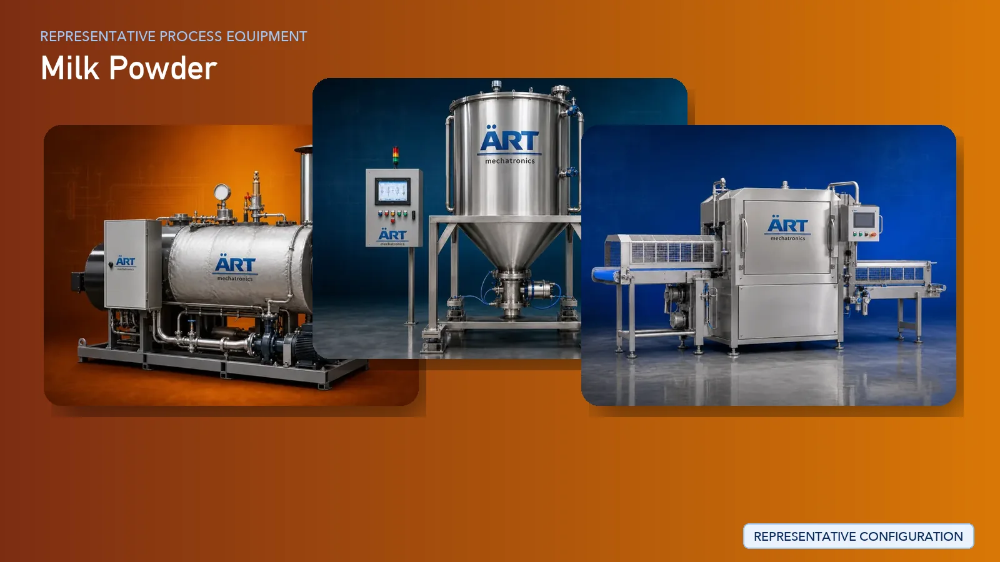

Milk Powder Manufacturing Plant & Machinery Solutions (Spray Drying Dairy Powder Production)
Milk powder manufacturing is a highly advanced segment in the dairy industry, producing products such as skim milk powder, whole milk powder, and dairy-based nutritional powders. These products are widely used in food processing, confectionery, bakery, infant nutrition, and export markets.

About Milk Powder processing
The process requires precise thermal treatment, controlled evaporation, advanced spray drying technology, and hygienic handling systems to ensure consistent quality, solubility, and long shelf life.
ART Mechatronics provides complete turnkey solutions for milk powder manufacturing plants, offering advanced systems for pasteurization, concentration, drying, and packaging. Our solutions are designed for high-capacity continuous production, energy efficiency, and compliance with global dairy standards.
Complete Milk Powder Process Flow
Raw milk is received, tested, and stored under chilled conditions.
Ensures quality control and hygienic handling.
Milk is cleaned to remove impurities.
Milk is heat-treated to eliminate harmful microorganisms.
Ensures food safety and shelf stability.
Fat content is adjusted and milk is homogenized.
Ensures consistent product quality.
Milk is concentrated by removing water content.
Reduces volume and prepares for drying.
- Fine milk powder
- Uniform particle size
- Proper moisture level
- Improved stability
Powder is granulated for better solubility.
Produces instant milk powder.
Suitable for:
- Retail sachets
- Bulk packaging
Machinery Required for Milk Powder Plant
- Milk Reception System
- Milk Analyzer
- Storage Tanks
- Milk Filter & Clarifier
- Pasteurizer (PHE)
- Homogenizer
- Multi Effect Evaporator
- Spray Dryer
- Cyclone Separator
- Fluid Bed Dryer
- Agglomeration System
- Powder Storage Silo
- Packaging Machines
Turnkey Milk Powder Plant Solutions
ART Mechatronics offers complete turnkey solutions for milk powder manufacturing plants, including:
- Process design & plant layout
- Milk processing and pasteurization systems
- Evaporation and drying systems
- Powder handling and packaging systems
- Automation & control panels
- Installation & commissioning
- After-sales support
We customize solutions based on:
- Product type (skim / whole milk powder)
- Production capacity
- Automation level
- Packaging format
Why Choose Art Mechatronics
- Expertise in advanced dairy powder processing
- High-efficiency spray drying systems
- Energy-efficient plant design
- Hygienic stainless steel processing systems
- Consistent product quality
- Global export capability
Machinery in a Milk Powder plant
Where it's used
Get pricing & specs for the Milk Powder plant
Share the product, target capacity, current process and plant location. These details help our engineers discuss the right machine or line configuration.
One partner, from design to start-up
ART Mechatronics designs, manufactures, installs and commissions your Milk Powder solution with regional presence in India, UAE and Thailand.